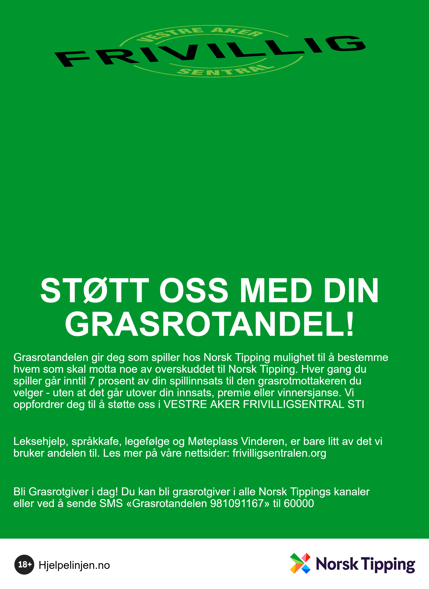

Små bidrag. Lokalt fellesskap.
Støtt oss med Grasrotandelen
Gi mer rom for fellesskap i nærmiljøet!
Med Grasrotandelen støtter du Vestre Aker Frivilligsentral og bidrar til aktiviteter og tilbud som leksehjelp, språkkafé, legetransport og Møteplass Vinderen.
Slik velger du oss
- Følg lenken nedenfor eller skann QR-koden.
- Velg «Sett som grasrotmottaker» og følg veiledningen hos Norsk Tipping.
Du velger mottaker hos Norsk Tipping.
Hva er Grasrotandelen?
Spiller du hos Norsk Tipping, kan du velge at en del av overskuddet skal gå til oss. Det koster deg ingenting ekstra, og påvirker verken premien eller vinnersjansene dine.
Les om ordningen hos Norsk Tipping.
Du kan også velge oss på SMS
Send SMS med teksten GRASROTANDELEN 981091167 til 60000, eller få hjelp hos en av Norsk Tippings kommisjonærer.
Mottaker: Vestre Aker Frivilligsentral STI
Organisasjonsnummer: 981 091 167

Del gjerne plakaten vår
Hjelp flere med å oppdage hvordan de kan støtte frivilligsentralen.
Last ned plakaten (PNG, 651 kB)
Takk for at du bidrar til et nærmiljø med flere møteplasser og hjelp i hverdagen!